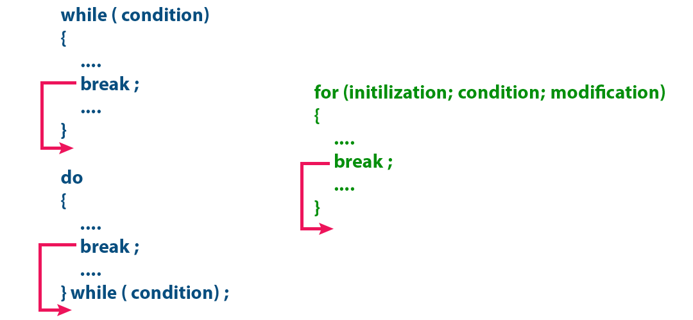
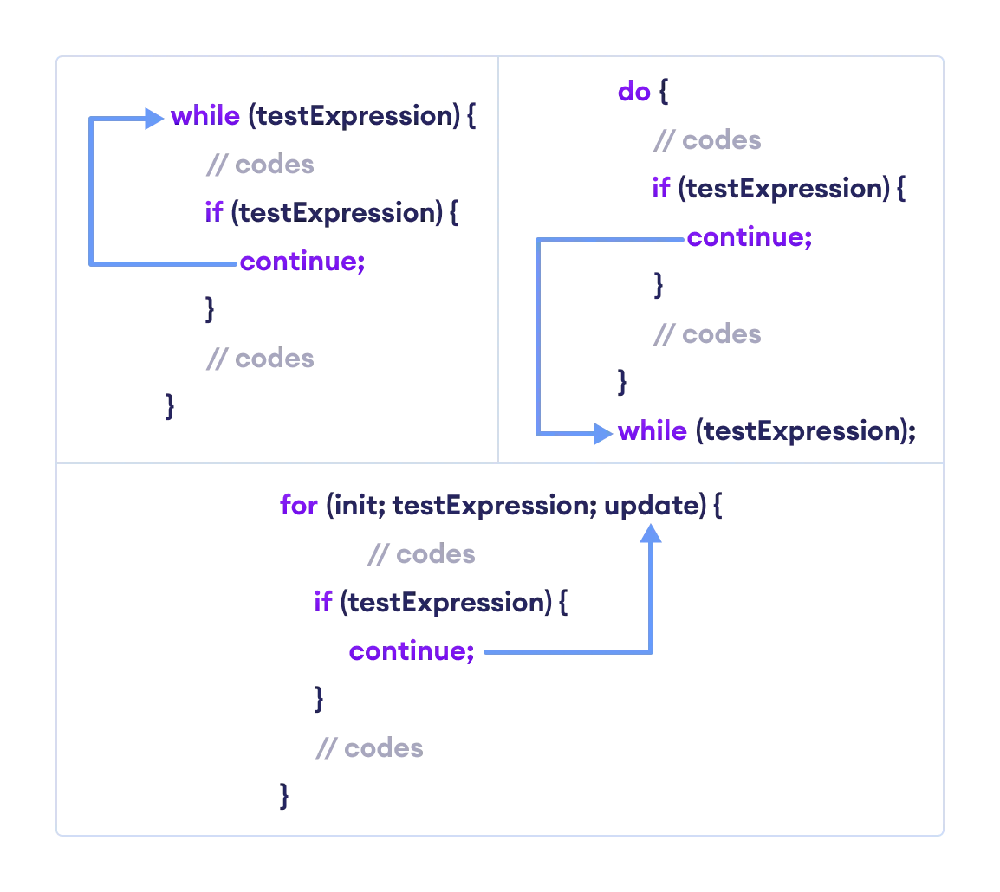
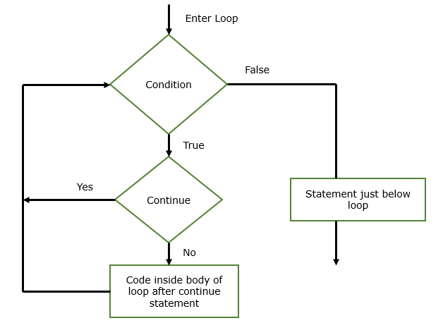

Branch Statements
These statements are used in the control statements. Loops and conditional statements use these statements to have more diverse control over the code. All of them have different control over and functions to make different adjustments for the miscellaneous cases.
Basically these branch statements are used in loops:
While:> It jumps back to the condition.
For:> It jumps to the update expression.
These Loops mainly consists of a condition and a increment value for the primary variable declared inside the loop and the branch statements are declared inside the loops and provide additional functions
- While:
example code for "while" with branched "continue" statement.

-
For:
Example code for "for" loop with branched "break" statement.

Now lets understand all the types of branched control statements breifly :
Break
this statement is used to stop the iteration at a halt and get out of the loop. and giving back the control to the function or method.

Continue
This statement is used to make a skip or jump from one iteration to another skipping the code in the control statement and proceeding to the other iteration neglecting the code after an encounter.


Return
The return statement is also a branching statement, which allows us to explicitly return value from a method. The return statement exits us from the calling method and passes the control flow to where the calling method is invoked.

@WT_PROJECT